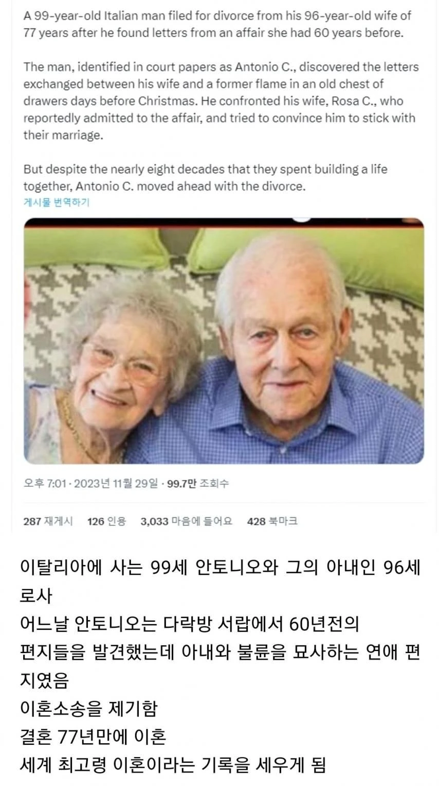

저 나이에 저게 되네..

저 나이에 저게 되네..
곧 잡으러 갈듯...
아이고... 행복해야할 말년에 아내가 글레였다는걸 알아버려서 어떡하냐..
글레 가튼련!
스액스
저정도면 무슨 사건있던거 맘에 품고있다가 빼박증거 나와서 지른건가
심증은 있지만 물증이 없어 60년 간 존버함
알았으면 그냥 씁쓸하지만 역시 그랬군 하고 넘어갔겠지만
몰랐으니 배신감에 살날이 몇년안남았어도 이혼해버린거지
저 나이에 이혼은 따로 사는 의미보다는 상징적인거니
도
죠셉 죠스타아아!
저정도면 상대편은 이미 저세상 갔겠는데